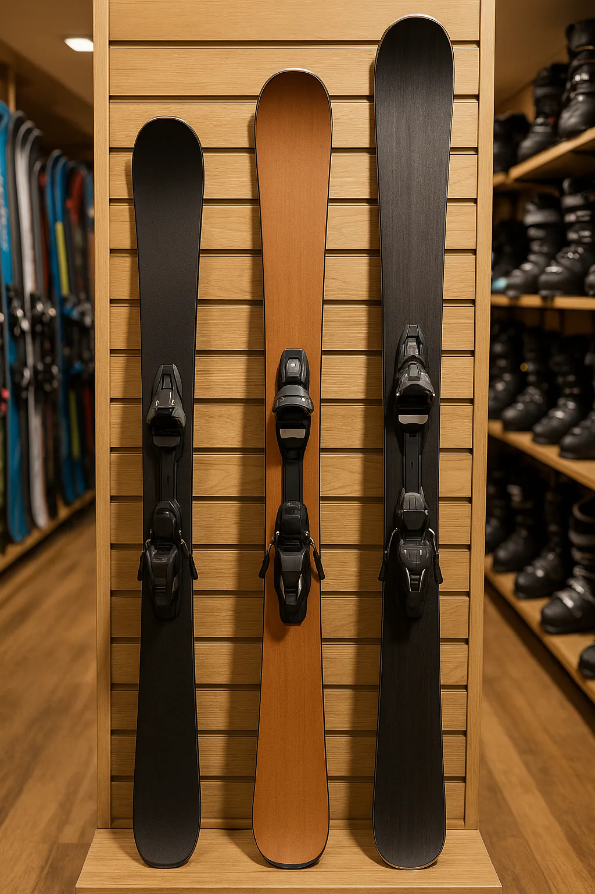

Preparar tu viaje a la nieve es una de las partes más emocionantes, y elegir el equipo adecuado es fundamental para disfrutar al máximo. En Alpine Ski Academy, no solo te enseñamos a esquiar, sino que también nos aseguramos de que tengas la mejor experiencia, y eso empieza con el material.
Como escuela de esquí y snowboard, no somos una tienda de alquiler, pero trabajamos con los mejores partners del sector. Por eso, hemos creado esta guía completa para que sepas todo lo que necesitas sobre el alquiler de tu equipo. Aquí te explicamos por qué la calidad importa, dónde encontrarla y cómo te ayudamos a conseguir el material perfecto para ti.
¿Alquilar o Comprar? La Opción más Inteligente
Para muchos, la pregunta de si alquilar o comprar es una de las más importantes. La respuesta es simple: para la mayoría de los esquiadores, el alquiler es la opción más inteligente. No solo te ahorras una inversión inicial significativa y el coste del mantenimiento anual, sino que también tienes la libertad de probar equipos de última generación cada temporada. Nuestros partners renuevan su material constantemente, lo que te garantiza siempre lo mejor, sin tener que preocuparte por la logística del transporte o el almacenaje.

La Importancia de un Equipo de Calidad
Alquilar tu material puede parecer sencillo, pero la elección correcta marca una gran diferencia en tu rendimiento y, sobre todo, en tu seguridad en las pistas. Un equipo de calidad, moderno y bien mantenido ofrece múltiples beneficios. Por ello, te recomendamos alquilar en establecimientos de prestigio que además son distribuidores oficiales de marcas líderes, lo que asegura que su material sea de última generación y se renueve constantemente.

- Mayor seguridad: Unos esquís o una tabla modernos, en buen estado, con los cantos afilados, las suelas lisas y bien enceradas y las fijaciones bien ajustadas, te proporcionan el control que necesitas para evitar accidentes.
- Mejor progresión: Si eres principiante, el equipo adaptado a tu nivel te ayuda a aprender más rápido y con menos esfuerzo. Si eres un esquiador avanzado, el material de alta gama te permite perfeccionar tu técnica y seguir progresando entregándote mejores sensaciones en cada curva o terreno por el que deslices.
- Aprovechamiento total: Unas botas bien ajustadas y un equipo adecuado eliminan las molestias, permitiéndote esquiar más tiempo y disfrutar de cada bajada sin preocupaciones.
Guía de Elección: La Clave Está en el Detalle
Elegir tu equipo no es cuestión de suerte, sino de conocimiento. Aquí te damos algunos consejos de experto para que sepas qué pedir en la tienda. Por supuesto, si ya hemos esquiado juntos, no dudes en comentárnoslo antes de alquilar o comprar para que podamos aconsejarte de forma completamente personalizada.
1. Los Esquís: La Guía Definitiva por Nivel
Esquís para Debutantes: Primeros Pasos con Confianza
- Longitud (Talla): La regla de oro es elegir esquís de 10 a 15 cm menos que tu altura. Esto reduce el peso en la punta y la cola, facilitando el control direccional y la transición de un viraje a otro.
- Radio de Giro: Los esquís de iniciación suelen tener un radio de giro más corto (entre 12 y 15 metros). Un radio de giro corto facilita la entrada en el viraje sin necesidad de ejercer mucha presión o velocidad.
- Peso y Reacción: Son más ligeros y fabricados con materiales más blandos. A bajas velocidades, esta flexibilidad absorbe las irregularidades y perdona los errores de técnica, evitando que el esquí reaccione de forma brusca.
- Patin (Ancho): El patín (la parte central del esquí bajo la bota) suele ser de ancho medio (alrededor de 70-75 mm). Esto proporciona una superficie de apoyo estable en nieves pisadas.
Esquís para Nivel Intermedio: Ganando Terreno y Velocidad
- Longitud (Talla): La longitud recomendada se acerca más a la altura del esquiador, típicamente entre 5 y 10 cm menos. Esto aporta mayor estabilidad en giros amplios y a mayor velocidad.
- Radio de Giro: Se sitúa en un rango medio (entre 14 y 17 metros). Un radio ligeramente más largo permite un mayor control en virajes a alta velocidad sin sacrificar la agilidad.
- Peso y Reacción: Incorporan materiales de mayor calidad y una construcción más robusta. Pueden incluir una capa de fibra de carbono o titanal para aumentar la rigidez. Esto permite que el esquí reaccione con más energía en la salida del viraje.
- Patin (Ancho): El patín se mantiene en un ancho similar o ligeramente superior (75-85 mm), ya que a este nivel el esquiador se aventura en una mayor variedad de terrenos.
Esquís para Nivel Alto y Experto: Potencia, Precisión y Especialización
- Longitud y Estilo de Esquí: La talla ya no se define solo por la altura, sino por la disciplina elegida: Slalom (SL) son más cortos (entre 155 y 165 cm), Gigante (GS) son más largos (entre 175 y 195 cm) y Freeride/All-Mountain es una elección personal.
- Ancho del Patín: Este factor define la especialidad: Patín Estrecho (66-70 mm) para pista, Patín Medio (70-86 mm) para All-Mountain y Patín Ancho (86-120 mm y más) para Freeride y nieve polvo.
- Materiales y Reacción: Los esquís de alta gama incorporan dobles capas de Titanal, carbono y otras fibras que aumentan su rigidez. Requieren una técnica depurada para hacerlos trabajar, ofreciendo a cambio una potencia y reacción explosiva.
2. Las Botas: Tu Conexión con el Esquí
La bota es el nexo fundamental que transmite cada movimiento de tu cuerpo a la nieve. Un ajuste perfecto no solo elimina el dolor, sino que previene lesiones y garantiza la máxima precisión.
- El Flex de la Bota: La medida de rigidez. Va de 30 a 60 para niños y principiantes, de 60 a 100 para niveles medios y de 100 a 140+ para esquiadores expertos. Un flex más alto se traduce en un retorno más rápido y potente en la salida del viraje.
- El Last (Ancho): La anchura de la bota. Un last estrecho (97-98 mm) ofrece máxima precisión, mientras que un last estándar (99-101 mm) equilibra confort y control, y un last ancho (102-103 mm) prioriza la comodidad.
- Alquiler vs. Venta: Las botas de alquiler usan plásticos más blandos para la durabilidad, sacrificando algo de precisión. Las botas de venta, en cambio, utilizan plásticos de mayor dureza y botines termoformables o calefactables para una transmisión instantánea y precisa de la energía.
Consejo en alquiler: prueba siempre varias tallas y nunca elijas una bota demasiado grande "por comodidad": compromete el control y aumenta el riesgo de lesiones.
3. Los Bastones: Tu Herramienta de Equilibrio
La altura del bastón es vital para una técnica eficiente. Una medida incorrecta puede alterar sutilmente tu posición sobre los esquís.
- Medida Estándar: Invierte el bastón, sujétalo por debajo de la arandela y apóyalo en el suelo. Tu brazo debe formar un ángulo de 90 grados.
- Bastones Cortos: Facilitan virajes cerrados y son ideales para zonas de baches, permitiendo un movimiento fluido.
- Bastones Largos: Proporcionan un mayor impulso en terreno plano y son útiles para mantener el ritmo en giros amplios.
4. El Equipo de Snowboard: Modalidad, Flex y Perfil de la Tabla
Al elegir una tabla de snowboard de alquiler conviene fijarse en tres aspectos clave: la modalidad, el flex (rigidez) y el perfil (camber o rocker).

Flex de la tabla
El flex se mide en una escala de 1 a 10:
- Blando (1-4): Fácil de manejar y permisivo con los errores. Recomendado para principiantes y para freestyle en el snowpark.
- Medio (4-7): Versátil y estable en todo tipo de terrenos. Ideal para uso "all-mountain".
- Rígido (7-10): Muy estable a alta velocidad y con gran agarre en nieve dura. Recomendado para freeride y riders avanzados.
Perfil de la tabla (camber/rocker)
El perfil determina el comportamiento de la tabla sobre la nieve:
- Camber (curvatura positiva): Mayor agarre y respuesta, perfecto para pista y carving.
- Rocker (curvatura negativa): Facilita los giros y flota mejor en nieve polvo. Ideal para principiantes y freeride.
- Híbrido (camber + rocker): Combina agarre y flotación. Es la opción más polivalente en alquiler.
Modalidad y uso recomendado
- Pista: Tablas más precisas y rápidas, con buen agarre en cantos.
- Freestyle: Tablas gemelas (twin), maniobrables y con flex más blando para saltos y trucos.
- Freeride: Tablas direccionales, con nose más largo y rocker en la punta para mejorar la flotación en nieve profunda.
Consejos prácticos para elegir la tabla en el alquiler
- Longitud: Como regla general, la tabla debe llegar entre la barbilla y la nariz al colocarla de pie junto al cuerpo. Más corta → más fácil de girar, recomendada para principiantes y freestyle. Más larga → más estable a velocidad y con mayor flotación en nieve polvo, ideal para freeride.
- Ancho (waist width): Debe ajustarse a la talla de bota. Botas < 42 EU → tabla estándar. Botas 43 EU o más → tabla wide (más ancha) para evitar que sobresalgan los pies y se enganchen en la nieve.
- Nivel de experiencia: Principiante → flex blando y rocker o híbrido sencillo. Intermedio → flex medio e híbrido. Avanzado → flex medio-rígido y camber/híbrido según la modalidad.
Resumen rápido para alquilar
- Si eres principiante → tabla corta, flex blando, perfil rocker o híbrido.
- Si buscas una tabla polivalente → longitud media, flex medio, perfil híbrido.
- Si quieres freeride o carving a velocidad → tabla más larga, flex rígido, perfil camber o híbrido con nose rocker.
Nuestros Partners: Calidad, Excelencia y Expertos a tu Servicio
Para nosotros, la calidad del material es tan importante como la calidad de nuestras clases. Por eso, colaboramos con los mejores establecimientos que garantizan lo mejor para nuestros clientes.

M Plus Ruda y M Plus Vielha
Distribuidores oficiales de marcas como Rossignol, Dynastar, Black Diamond y Lange. Esto asegura equipo de alta gama renovado constantemente.
M Plus Ruda: Galería comercial, Urb. Vall de Ruda, Local 4, 25598 Baqueira Beret. A pie de pista en Baqueira 1500, la opción más cómoda.
M Plus Vielha: Carrèr Major, 2, 25530 Vielha e Mijaran. Perfecta si te alojas en la capital del Valle.
Mombi Surf (Salardú)
Salardú
Auténticos especialistas del snowboard que trabajan con las mejores marcas, como Jones y Nideker.
Ubicación: Ctra. de Bonaigua, 7, 25598 Salardú. La tienda de referencia para el snowboard en la zona.
Preguntas Frecuentes sobre el Alquiler de Material
¿El alquiler está incluido en el precio de la clase?
No, es un servicio externo. Sin embargo, por venir de nuestra parte, recibirás un trato especial.
¿Puedo alquilar el material el mismo día de la clase?
Sí, aunque te recomendamos recogerlo el día anterior si tu clase es temprano.
Conclusión: La Combinación Perfecta
En Alpine Ski Academy, nuestra misión es asegurar que cada detalle de tu experiencia de esquí sea perfecto. Al colaborar con profesionales del alquiler, te garantizamos que tu material estará a la altura de las expectativas.
Te invitamos a reservar tus clases y a aprovechar nuestro servicio de asesoramiento gratuito para equiparte de la mejor manera. Puedes encontrar más información sobre nuestro servicio y las direcciones de las tiendas en nuestra web en el siguiente enlace: Alquiler de material de esquí y snowboard en Baqueira.
¡Nos vemos en las pistas!